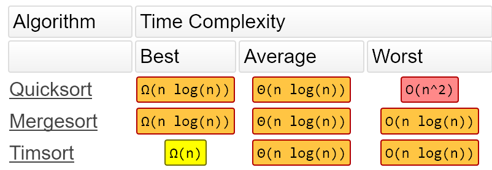

Journal on 2020-02-21
Posted on Fri 21 February 2020 in Journal
自嘲
运交华盖欲何求，未敢翻身已碰头。
破帽遮颜过闹市，漏船载酒泛中流。
横眉冷对千夫指，俯首甘为孺子牛。
躲进小楼成一统，管他冬夏与春秋。
舆论环境至此，多说了几句微博帐号就发不出文字
Thinking about programming
万丈高楼平地起，再复杂的算法，抽丝剥茧，拆解成一块块简单的积木，再完整地拼回去，如此几番，自然能化繁为简，可以综合运用各种方法：
- 1） 写一个简化版本，把异常处理，额外的优化等细枝末节去掉，删繁就简，突出主要逻辑
- 2） 画思维导图，把脉络和要点画出来
- 3） 画 UML图，重点关注于核心数据结构和流程
- 4） 举几个实例例子，写对应的示例和测试程序
- 5） 最后，把整个分析过程总结下来，形成文章发布出去
About sort algorithm
最快的排序算法是什么，很多人的第一反应是快排，QuickSort 当然应该最快了，其实也不一定，快排是不稳定的，最坏情况下，快排序并不是最优，Java7 中引入的 TimSort 就是一个结合了插入排序和归并排序的高效算法.
Timsort最早是 Tim Peters 于2001年为 Python 写的排序算法。自从发明该算法以来，它已被用作Python，Java，Android平台和GNU Octave中的默认排序算法。
看看它与另外两个高效排序算法的比较

可以看到 TimSort 的最佳，平均和最坏情况综合起来最佳。在数据量比较少（<=64）的情况下，它直接用 Insert Sort，否则使用 MergeSort + BinarySearch 来提高排序效率